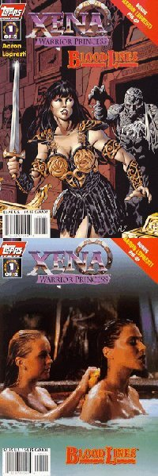
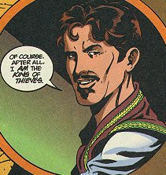
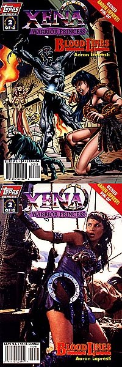
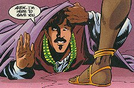

Xena: Warrior Princess/Bloodlines #1 (of 2)
Title: Bloodlines
Date: May 1998
Actual Release: 20 May 1998
Pages: 32 (22 pgs story) plus pull-out poster
Cover Price: $2.95
Writer/Artist: Aaron Lopresti
Letters: Dan Nakrosis
Colors: Digital Chameleon
Editor: Charles S Novinskie
Painted Cover: Aaron Lopresti
Photo Cover: Unknown
NOTE: Xena: Warrior Princess created by Robert Tapert and John Schulian
OVERVIEW:
Gabrielle and Xena have travelled to Egypt at Cleopatra's request. They are met at the docks by Judacus, who is now the head of the Queen's Guard. He assures Xena that Cleopatra's need is dire, after Xena makes it clear that she is no longer a mercenary.
In the meantime, The King of Thieves, Autolycus, is enjoying the company of the priestess Katebet, who is hiring him for a job. She wants him to collect five gemstones for her, from the tombs of the pharoahs. He agrees to the price of 100 gold pieces and maybe other assets.
Cleopatra meets with Xena and Gabrielle, in private, and explains that she fears a rebellion in Egypt. She doesn't even trust her own guard. She thinks that a rebellion will lead to Rome's domination of Egypt, and appeals to Xena's hatred of Rome.
Autolycus easily finds the gemstones that Katebet wants. Katebet, watching in a greenish pool, muses on his fate. She sends off a guard who chastizes her, then visits the mummy of Ah Kaman, bodyguard of Ramses, who she intends to bring to life to help her wrest control of Egypt from Cleopatra.
As Gabrielle and Cleopatra enjoy the palace baths, Cleopatra and Xena chat about Xena's life and freedom.
Autolycus gets the gemstones to Katebet, and takes his reward.

Xena and Gabrielle start teaching Cleopatra self-defense the next day. Judacus rushes in to inform the Queen that an attempt will be made on her life. He requests that Xena come with him to help flush out the killers. Xena suggests laying a trap for the killers instead, and prepares.
Katebet brings the mummy to life, even as Autolycus discovers that he was only paid 99 gold coins instead of the 100 agreed upon.
Gabrielle dresses as Cleopatra and sleep in her bed. In the middle of the night, she sees the mummy of Ah Kaman coming at her. Xena fights it, but cannot win, and it takes Gabrielle away...
COMMENTS:
This story has B-movie syndrome, and that's not a bad thing. The cover is very indicative of the kind of story it is (the art cover, not the photo cover).
The King of Thieves! One of my favorite characters from the show. He is not as satisfying on two dimensional paper, but he's still fun to read.
CONCLUSION:
Fun story with some of the best Xena characters, added benefit: only two parts. Pick it up.
Review Date 21 June 1998 by Laura Gjovaag

Xena: Warrior Princess/Bloodlines #2 (of 2)
Title: Bloodlines Part 2
Date: June 1998
Actual Release: 24 June 1998
Pages: 32 (22 pgs story) plus pull-out poster
Cover Price: $2.95
Writer/Artist: Aaron Lopresti
Letters: Dan Nakrosis
Colors: Digital Chameleon
Editor: Charles S Novinskie
Painted Cover: Aaron Lopresti
Photo Cover: Unknown
NOTE: Xena: Warrior Princess created by Robert Tapert and John Schulian
OVERVIEW:
A disbelieving Xena has just seen a mummy carry off Gabrielle. She solicits help from the Queen's Guard, to destroy the monster by sheer force of numbers. Judacus maintains that he must stay and protect the queen, but Xena takes his best men in pursuit of the monster.
Katebet, meanwhile, quickly figures out that Gabrielle is not Cleopatra, and decides to murder Gabrielle and mummify her.
And for a third plot thread, Autolycus is returning to get his final gold piece from Katebet, and discovers Gabrielle. He frees one hand before Katebet returns, and then runs off to warn Xena and Cleopatra.
When Xena and the guards arrive at the end of the trail, the guards refuse to follow Xena into the Temple of Anubis. She goes on alone, hoping to figure out a way besides numbers to destroy the mummy. She interrupts Katebet about to kill Gabrielle, who uses her free hand to disarm Katebet. Xena then battles Ah Kaman while Gabrielle, mostly tied up, battles Katebet.
Autolycus reaches the palace and enters the Queen's room just as Judacus, Katebet's assassin, is about to kill Cleopatra. His clumsy entrace distracts Judacus long enough for Cleopatra to knock him out.
In the temple, Gabrielle knocks Katebet into the magical gemstones which animated Ah Kaman, frying her and destroying the mummy. They then rush to save Cleopatra, who is busy rewarding Autolycus for his timely entrance. While explanations are being made, Autolycus makes his escape.
COMMENTS:

Probably the best Xena mini so far. I would highly recommend it to people wanting to try out the comics. This may be, however, because I'm a big fan of Autolycus (definitely my favorite recurring character in the series).
The cover is good, even though Gabrielle looks a little odd in the background. On my copy, the UPC symbol blocks out enough of the action with the mummy hand to make it unclear just what Xena is looking at. Thank goodness for the pin-up, huh? Of course, in the pin-up the mummy has two hands... er. Don't think about it, just enjoy it.
Another continuity error I noticed was Xena's sword in Ah Kaman's chest. In his first appearance in the book, when he brings Gabrielle into Katebet, it's not there. Later, when Xena is battling him, it reappears.
CONCLUSION:
Highly recommended, with the understanding that I'm a big fan of Autolycus and that may have colored my review.
Review Date 30 June 1998 by Laura Gjovaag